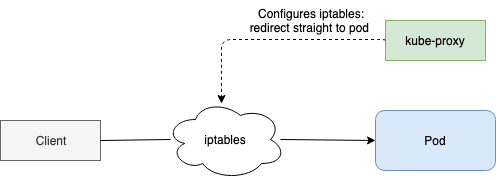

Cloud Native OCI
Holistic microservices demo
 +
+
Table of Contents
Primary Contributors
| Jeevan Joseph | Oracle A-Team |
| Adao Oliveira Junior | Oracle A-Team |
| Julio Camara | Oracle A-Team |
| Sumit Kumar | Oracle A-Team |
| Sherwood Zern | Oracle A-Team |
| Matt Vander Vliet | Oracle A-Team |
Workshop Overview
- Learn to utilize Cloud Native OCI services
- Build and deploy microservices with OKE
- Demo a complete polyglot application on OCI
- Exhibit benefits of Cloud Native services
- Use of CI/CD*
Background
...
Prerequisites
Prepare K8S
Many exercises in this workshop require the use of Kubernetes. In order to run commands in a local cluster, please follow these instructions to setup your environment.
Enable Kubernetes (Mac)

Enable Kubernetes (Windows)

Check kubectl context
kubectl config current-contextCreate namespace
kubectl create namespace mushopSet as default (Optional)
kubectl config set-context $(kubectl config current-context) --namespace=mushopInstall an ingress controller
kubectl apply -f https://raw.githubusercontent.com/kubernetes/ingress-nginx/master/deploy/static/mandatory.yaml
kubectl apply -f https://raw.githubusercontent.com/kubernetes/ingress-nginx/master/deploy/static/provider/cloud-generic.yamlNOTE: There are several options for ingress controllers in K8S. This demo uses the common ingress-nginx
Shipping and Stream App
 LB
LB
VCN
Overview of Streams
- What is OSS?
- Use cases
- Concepts
- How it works
- Limits
What is OSS?
- The OCI Streaming Service provides a fully managed, scalable, and durable storage solution for ingesting continuous, high-volume streams of data that you can consume and process in real time
- OSS is a distributed even-log
- Messages are written to partitions and can be referenced via partition/offset

Use cases
- Metric and log ingestion
- Messaging
- Web/Module activity data ingestion
- Infrastructure and apps event processing
How it works
- A producer publishes a messages to a stream (append-only log)
- Streams can be divided into a number of partitions for scalability.
- A consumer reads messages from one or more streams.
Limits
- Message retention: up to 7 days
- Throughput: 1 MB/sec per partition
- Message size: 1 MB maximum
- API calls per second: 5 getMessages per partition
- Max Total Data Write per second: 1 MB per partition
- Number of partitions: Enterprise tenancy: 5, Non-Enterprise: 0
Concepts
- Stream: a partitioned, append-only log of messages
- Message: base64-encoded record that is published to the stream
- Offset: the location of a message within a partition.
Concepts
- Partition: a section of a stream. It allows you to distribute a stream by splitting messages across multiple nodes. Each partition can be placed on a separate machine to allow for multiple consumers to read from a stream in parallel.
Concepts
- Cursor: a pointer to a location (offset or time) in a stream.
Concepts
- Cursor: a pointer to a location (offset or time) in a stream.
Concepts
- Producer: an entity that writes/publishes messages to a stream.
Concepts
- Consumer: an entity that reads messages from one or more streams.
Mushop Shipping Application - Producer
Connecting to OSS
Overview of Kubernetes
- Introduction
- Basic Resources
- Architectures
- Deployment Manifests
- Hands-on Practice
Containers vs VMs

Monolithic vs Microservices

Scaling Microservices

Imperative vs Declarative Mode
Modes for managing objects in KubernetesImperative Mode
kubectl create namespace mushopDeclarative Mode
kubectl apply -f orders.yamlBasic Resources
- Pod
Basic Resources
- Configmaps
Basic Resources
- Namespace

Basic Resources
- Replicaset
Basic Resources
- Services
Basic Resources
- Deployment
Basic Resources
- Ingress

Architecture
Architecture - High Availability Cluster
API Server
Watcher Pattern
Scheduler
Controller Manager
Controller Manager
- Replication Manager (a controller for ReplicationController resources)
Kublet
Kube-proxy
How Controllers Cooperate
Chain of Events
Manifests

The Problem
- Steep learning curve when implementing Kubernetes
The Solution: Helm
- Helm is a package management tool for Kubernetes
- A CNCF project
- A package manager similar to yum, brew, apt-get, choco, etc., but specifically for Kubernetes
- Method for repeatable application installation, configuration, and versioning through the use of charts, repositories, and releases
- Repository of existing templates for standard software